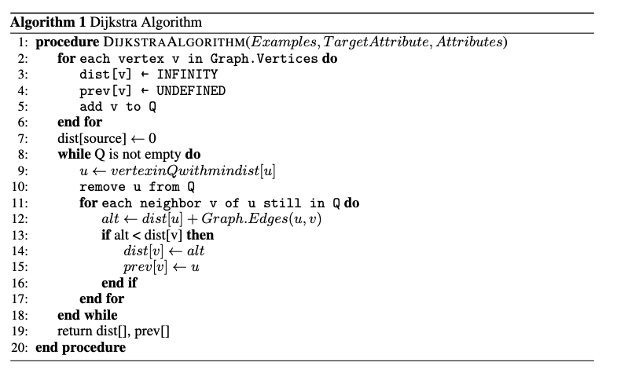

Summary
We are going to implement a distributed decision tree on the GHC machine using a hybrid of CPU and GPU, then compare the performance between the sequential version and the parallel version of the algorithm.
Background
The decision tree is an algorithm for classification, with a tree-like structure in which each branch is the outcome of a test, and a leaf node is the class label. The path from the root to each leaf node is the classification rule of the class.

Here are several aspects of the algorithm that can benefit greatly from parallelism:
Challenge
Though decision tree is well-studied as a machine learning algorithm, it contains many typical challenges when it comes to parallel implementation. There are many nuances in implementing large-scale parallel training of decision tree. At its core, the decision tree algorithm is sequential because each node split depends on the outcome of the previous one. This sequential dependency can make it difficult to fully parallelize the algorithm, especially in the early stages of tree construction where the choice of the root node and its immediate splits significantly influence the structure of the entire tree.
However, we can still parallelize some intermediate process
Goal and Deliverable
Resource
The resource we need for this project is the GHC/PSC machine cluster, with openMP and MPI installed, and GPU core enabled.
We also found some papers discussing the distributed decision tree algorithm, which can be used as a reference.